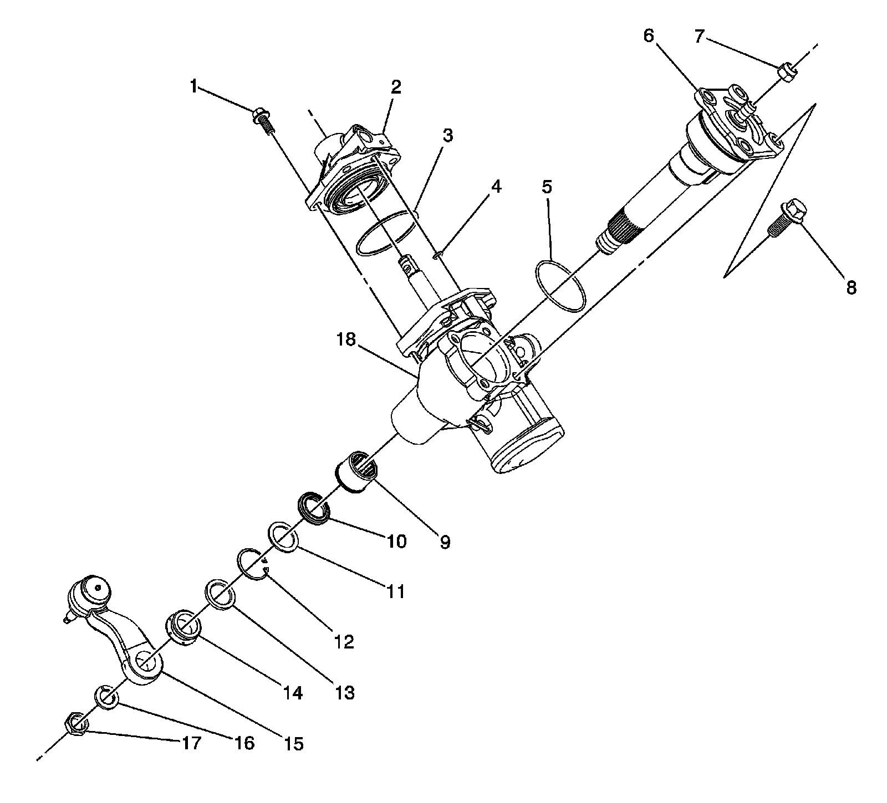

Power Steering Gear Disassembled View (680 Gear)
Power Steering Gear Disassembled View (680 Gear)
Power Steering Gear Disassembled View (680 Gear):

1 - Steering Gear Housing Cover Bolt (4)
2 - Steering Gear Housing Cover
3 - Steering Gear Housing Cover O-ring Seal 82mm
4 - Steering Gear Housing Cover O-ring Seal 7.6mm
5 - Pitman Shaft-Steering Gear Housing Cover O-ring Seal
6 - Pitman Shaft and Cover Assembly
7 - Pitman Shaft Adjustment Nut
8 - Pitman Shaft-Steering Gear Housing Cover Bolt (4)
9 - Pitman Shaft Bearing Assembly
10 - Pitman Shaft Seal
11 - Pitman Shaft Washer
12 - Pitman Shaft Seal Retaining Ring
13 - Pitman Shaft Dust Seal
14 - Pitman Arm Boot
15 - Pitman Arm Assembly
16 - Pitman Arm Lock Washer
17 - Pitman Arm Nut
18 - Power Steering Gear Housing